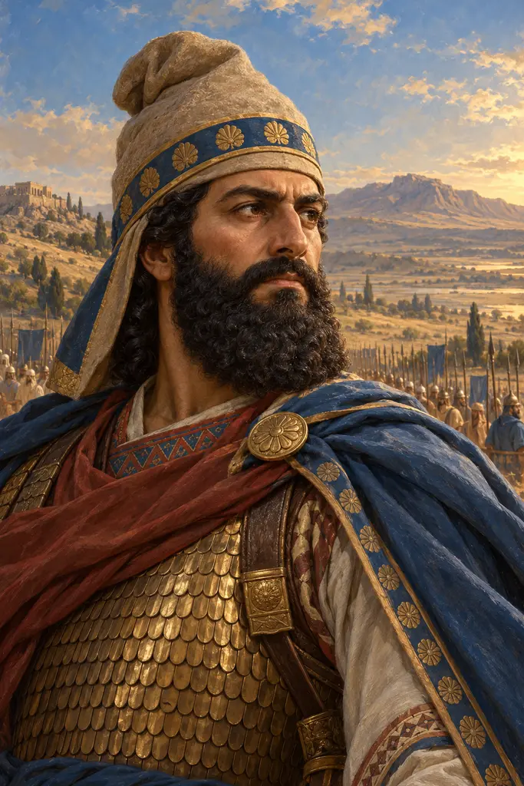
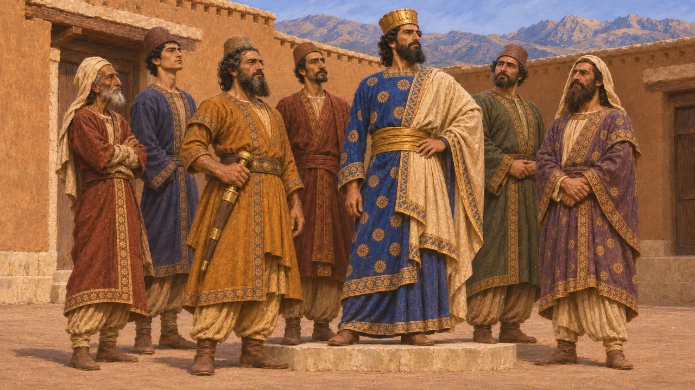
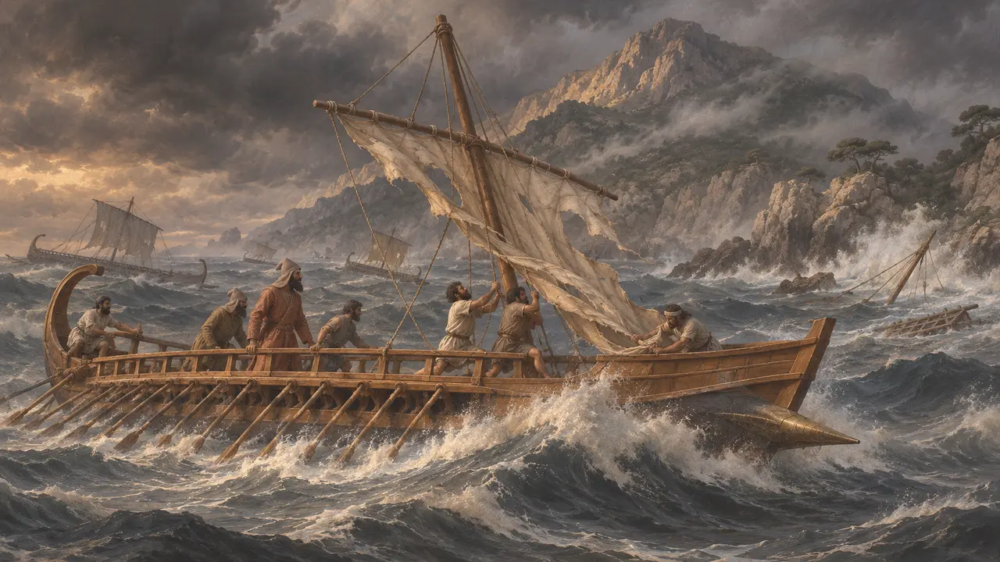
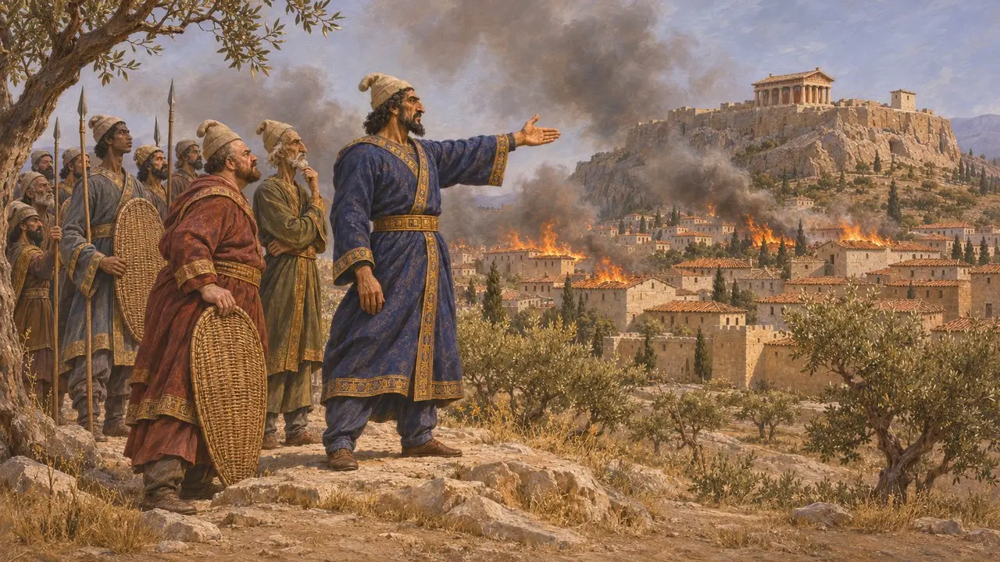
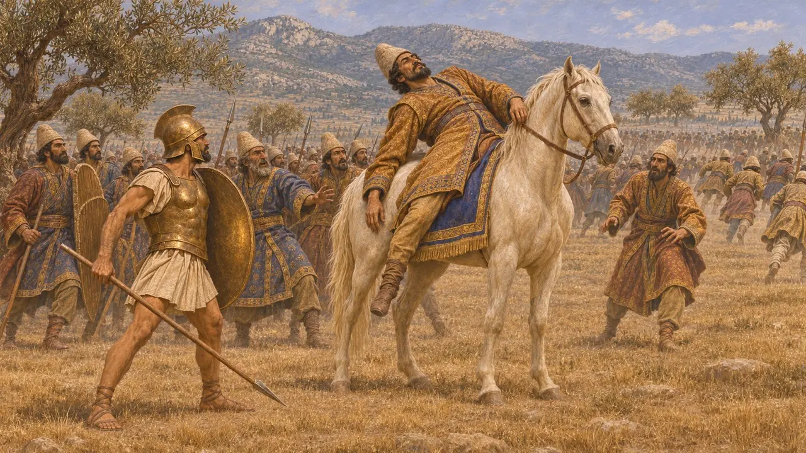
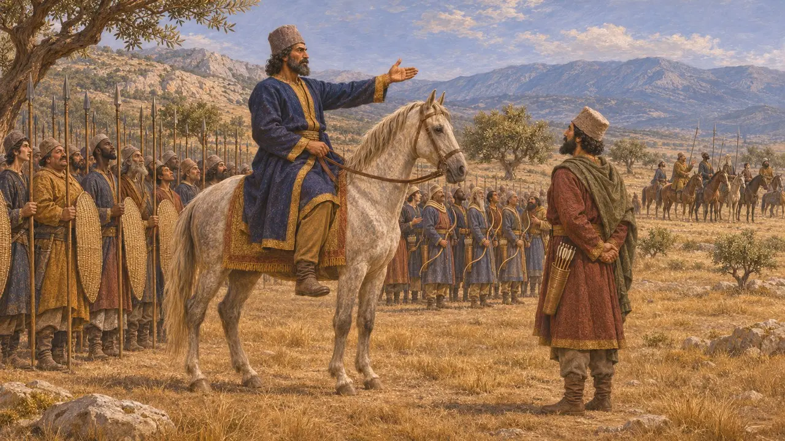

Mardônio
General persa, filho de Góbrias e genro de Dario, morto em Plateia em 479 AEC
No jogo: Nível 7: Sardes em Chamas, Nível 9: O Canal, Nível 11: O Final
Mardônio era um nobre persa da mais alta posição, filho de Góbrias, companheiro de conspiração de Dario, e marido de uma das filhas de Dario. Liderou a campanha de 492 AEC na Trácia e na Macedônia, instou Xerxes a invadir a Grécia e comandou o exército deixado para trás após Salamina. A derrota de seu exército em Plateia, em 479 AEC, onde ele foi morto, pôs fim à tentativa do Rei de conquistar a Grécia continental.
No jogo: A nota da crônica do jogo resume Mardônio em uma linha: filho de Góbrias e genro de Dario, perdeu sua frota ao largo de Atos em 492 AEC, incitou Xerxes à guerra, permaneceu na Grécia após Salamina e tombou em Plateia.

Uma família próxima ao trono
Nos registrosA inscrição de Dario em Behistun nomeia Gaubaruva, filho de Marduniya, entre os seis persas que estiveram ao seu lado contra Gaumata em 522 AEC. Gaubaruva é o Góbrias dos gregos, e Marduniya é a forma em persa antigo de Mardônio. O general provavelmente levava, portanto, o nome do avô, e vinha de uma das famílias que ajudaram a pôr Dario no trono.
DB §68

A campanha de 492 AEC
Relato antigoHeródoto conta que Mardônio, jovem e recém-casado com Artozostra, filha de Dario, chegou à Jônia, depôs os tiranos gregos e permitiu democracias. Sua frota tomou Tasos sem combate, e seu exército acrescentou os macedônios aos súditos do Rei, embora a Macedônia já tivesse dado terra e água anos antes. Uma tempestade ao largo do Monte Atos destroçou a frota, que perdeu, pelas contas de Heródoto, 300 navios e mais de 20.000 homens, e os brigos da Trácia o feriram num ataque noturno.
Herodotus 6.43-45

Defensor da guerra e comandante na Grécia
Relato antigoHeródoto faz de Mardônio o principal cortesão a instigar Xerxes a punir Atenas, contra a cautela de Artabano. Depois de Salamina, ele se ofereceu para ficar com tropas escolhidas enquanto o Rei voltava para casa. Passou o inverno na Tessália, enviou Alexandre da Macedônia para oferecer uma aliança a Atenas e, em 479 AEC, reocupou Atenas e a incendiou antes de se retirar para a Beócia.
Herodotus 7.5-10; Herodotus 8.100-102; Herodotus 8.113; Herodotus 8.136-140; Herodotus 9.1-13

Morte em Plateia
Relato antigoHeródoto conta que Mardônio lutou montado num cavalo branco, em meio a mil persas escolhidos, e que os persas debandaram assim que um espartano chamado Arimnesto o matou. Seu corpo desapareceu no dia seguinte, e Heródoto ouviu várias versões divergentes sobre quem o teria sepultado. Ele relata também que Pausânias recusou o conselho de mutilar o cadáver como vingança por Leônidas.
Herodotus 9.63-64; Herodotus 9.78-79; Herodotus 9.84

Favorito imprudente ou general capaz
DisputadoHeródoto retrata Mardônio como ambicioso e ávido por governar a Grécia. Os historiadores modernos respondem que a campanha de 492 AEC garantiu a Trácia e a Macedônia apesar da tempestade, e que a invasão foi uma política real, e não o plano de um único cortesão. Heródoto lhe atribui 300.000 homens em Plateia, número que os historiadores consideram muito exagerado.
P. Briant, From Cyrus to Alexander, 2002; J. F. Lazenby, The Defence of Greece 490-479 BC, 1993; Herodotus 9.32
Fontes
- Herodotus, Histories, books 6-9
- DB §68
- P. Briant, From Cyrus to Alexander, 2002
- J. F. Lazenby, The Defence of Greece 490-479 BC, 1993